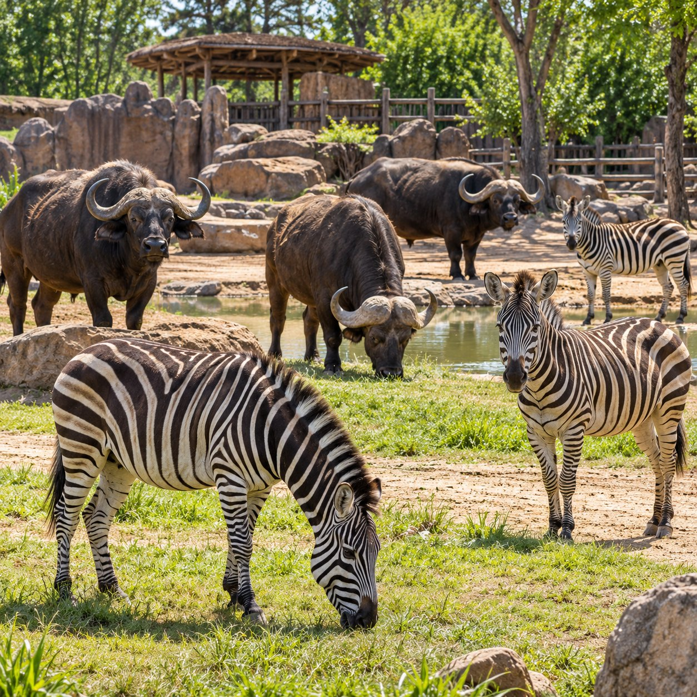
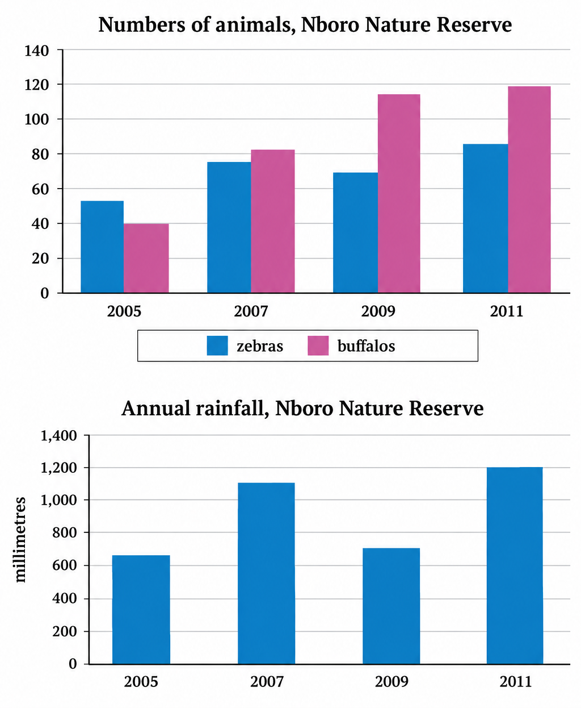
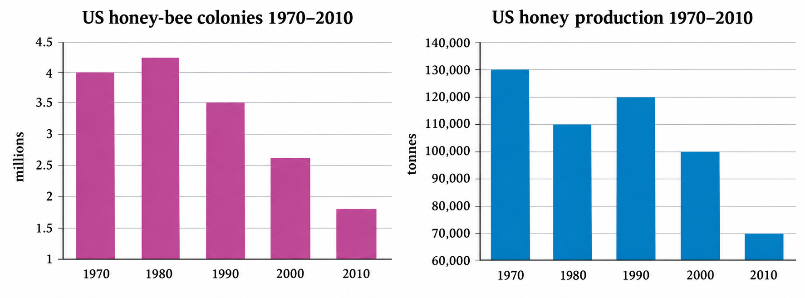

Vocabulary — Describing Charts and Animal Numbers
Today is all about Writing Task 1: describing charts. These words will help you in the article, the charts and your own writing. Study the table, then do the two exercises below.
| word / phrase | meaning | example |
|---|---|---|
| rise (rose, risen) | to go up; to increase | The number of visitors rose from 200 to 350. |
| fall (fell, fallen) | to go down; to decrease | The number of penguins fell to 35 in 2010. |
| remain stable | to stay the same; not go up or down | The number of elephants remained stable at six. |
| reach a peak | to get to the highest point | Visitor numbers reached a peak of 240,000 in 2007. |
| approximately | about; not exactly | There were approximately 50 zebras in 2005. |
| overall | in general; looking at the whole picture | Overall, the number of animals increased. |
| population | the number of people or animals living in a place | The zebra population grew in the rainy years. |
| nature reserve | a protected area where wild animals can live safely | Buffalos and zebras live in the Nboro Nature Reserve. |
| annual | happening once a year; for one whole year | The annual rainfall was 1,200 millimetres in 2011. |
| colony | a large group of animals, such as bees, that live together | One bee colony can contain thousands of bees. |
A. Match each word to its meaning.
B. Complete the sentences with a word from the box.
1. The number of monkeys from 45 to 80.
2. There were 300 animals in the zoo, but nobody knows the exact number.
3. The number of penguins from 60 to 35.
4. The rainfall in the reserve was 700 millimetres in 2009.
5. , both charts show that the numbers went up during the period.
Reading — Ten Years at Greenfield City Zoo
Read this short report about the animals in a zoo. The highlighted words are useful language for describing charts in Writing Task 1 — notice how they are used. Then answer the questions.
Ten Years at Greenfield City Zoo
Every year, the keepers at Greenfield City Zoo count all the animals that live there. This short report looks at the figures between 2001 and 2010.
In 2001, the zoo was home to 320 animals. Over the next three years, the total rose steadily, and by 2004 it had reached 410. The number fell slightly to 390 in 2007, when a group of older animals was moved to a nature reserve. After that, it increased again and reached a peak of 520 in 2010.
The figures for individual animals were very different. The number of monkeys went up from 45 to 80, mainly because many babies were born. In contrast, the number of penguins dropped from 60 to 35, because the old penguin pool was too small. The number of elephants remained stable at six throughout the period.
Visitor numbers also changed. In 2001, approximately 150,000 people visited the zoo. This figure climbed to 240,000 in 2007, the highest point in the ten years, but then decreased to 210,000 in 2010, when ticket prices went up.
The zoo also needs a large amount of food. In 2010, the animals ate just under 90 tonnes of fruit, vegetables and meat — almost double the amount they ate in 2001.
Overall, the zoo grew a lot over the ten-year period. It now has more animals and more visitors than in 2001, although it has fewer penguins. The zoo plans to build a new penguin pool next year.
A. True or false?
1. The total number of animals rose every year between 2001 and 2010.
2. The number of monkeys went up because many babies were born.
3. The zoo had more penguins in 2010 than in 2001.
4. The number of elephants stayed the same.
5. Visitor numbers were highest in 2010.
B. Answer the questions. Write a number or a short answer.
1. How many animals were kept in the zoo in 2001?
2. How many animals did the zoo have in 2004?
3. How many penguins were there in 2010?
4. In which year did visitor numbers reach their highest point?
5. How many elephants did the zoo have?
6. How many more animals did the zoo have in 2010 than in 2001?
C. Find a highlighted word or phrase in the report that means…
1. stayed the same (two words)
2. about; not exactly (one word)
3. went down (one word)
4. in general; looking at the whole picture (one word)
Speaking — Animals in Zoos
Look at the photo and answer the three questions in a sentence or two. Then answer five Speaking Part 1 questions about zoos.

Look at the photo.
1. What animals can you see in the photo?
2. Do you think this photo was taken in a zoo or a nature reserve? Why?
3. Do you think the animals are happy living here? Why / why not?
Speaking Part 1 — Zoos. Record a short answer to each question. Answer naturally, and give a reason or an example.
Useful phrases:
- “Yes, I really enjoy it, because…”
- “To be honest, I'm not a big fan of zoos, because…”
- “It's a great way to…”
Useful phrases:
- “The last time I went was…”
- “I haven't been to a zoo since…”
- “I went there with…”
Useful phrases:
- “My favourite animal is probably…”
- “I love watching them because…”
- “They're so…”
Useful phrases:
- “Yes, there's one in…”
- “I don't think there are any, but…”
- “It's quite popular with…”
Useful phrases:
- “I think it's a good idea because…”
- “Children can learn a lot about…”
- “On the other hand, …”
Writing Task 1 — Animals and Rainfall
In Writing Task 1 you describe a chart or graph in at least 150 words (about 20 minutes). You report the main facts and compare them — you do not give your opinion. Today we work step by step with one real task.
Writing Task 1
The charts below show information about animals and rainfall at the Nboro Nature Reserve.
Summarise the information by selecting and reporting the main features and make comparisons where relevant.

Exercise 1. True or false? Look at the charts above and read each sentence.
- If the sentence matches the charts, choose True. That's it.
- If it doesn't, choose False — a box will appear. Rewrite the sentence so that it's correct, using the numbers in the charts.
1. The charts give information about the number of zebras and buffalos and the amount of rain at the Nboro Nature Reserve between 2005 and 2011.
2. In 2005, there were fewer zebras than buffalos, with 40 zebras and 50 buffalos.
3. From 2005 to 2011, the number of buffalos rose each year till it reached just under 120.
4. On the other hand, the number of zebras fell to 75 in 2007 and then went up to 70 in 2009.
5. The zebra population then increased again to reach about 85 in 2011.
6. During the same period, there were 1,000 millimetres of rain in 2005.
7. The amount rose to 1,100 millimetres in 2007 and dropped to 700 millimetres in 2009, when there was little rain.
8. However, in 2011, 1,200 millimetres of rain fell.
9. Overall, numbers of both animals have decreased over the six-year period, but the amount of rain appears to affect the number of zebras.
10. When there is more rain, there are more zebras.
✓ The 10 sentences, corrected
Compare with your own corrections. Underlined words were changed; bold words are the time prepositions you'll practise in Exercise 4.
- The charts give information about the number of zebras and buffalos and the amount of rain at the Nboro Nature Reserve between 2005 and 2011.
- In 2005, there were more zebras than buffalos, with about 50 zebras and 40 buffalos.
- From 2005 to 2011, the number of buffalos rose each year till it reached just under 120.
- On the other hand, the number of zebras went up to 75 in 2007 and then fell to 70 in 2009.
- The zebra population then increased again to reach about 85 in 2011.
- During the same period, there were about 650 millimetres of rain in 2005.
- The amount rose to 1,100 millimetres in 2007 and dropped to 700 millimetres in 2009, when there was little rain.
- However, in 2011, 1,200 millimetres of rain fell.
- Overall, numbers of both animals have increased over the six-year period, but the amount of rain appears to affect the number of zebras.
- When there is more rain, there are more zebras.
🔒 Check your answers to Exercise 1 to unlock the corrected sentences and Exercises 2 and 3.
Exercise 2. Put the corrected sentences into paragraphs.
A good Task 1 answer has four kinds of paragraph. Read each corrected sentence and decide which paragraph it belongs to. Choose a, b, c or d.
Tip: one sentence is the introduction, and two sentences make the overview. The others describe the details.
Exercise 3. Find words and phrases in the corrected sentences which mean rose and fell.
Words and phrases that mean rose:
Words and phrases that mean fell:
Fill in every box above first — then you can compare with the suggested answers. Your answers lock when you open them.
rose: went up, increased, reach(ed) — and rose itself
fell: dropped — and fell itself; you can also say went down or decreased
💡 Mini advice — prepositions in time phrases
| use | example |
|---|---|
| in + a year or month | In 2005, there were 40 buffalos. · Honey production rose in July. |
| from … to … | The number rose from 2005 to 2011. |
| between … and … | Rainfall changed a lot between 2005 and 2011. |
| during / over + a period | During the same period, … · over the six-year period |
✗ Don't mix them: between 2005 to 2011 · from 2005 and 2011 · on 2005 · since 1990 to 2010
Exercise 4. Choose the correct preposition.
1. They started the research in / on 2002.
2. The number of animals increased from / between 2004 and 2008.
3. Average temperatures decreased from / between 2006 to 2010.
4. Animal numbers increased by 20% during / from this period.
5. Rainfall went up between / over the six-month period.
Exercise 5. IELTS candidates often make mistakes with prepositions in time phrases. Find and correct the mistake in each sentence.
1. The charts compare numbers of elephants across 1981 and 2001. → between (example)
2. The figures increased during 1950 to 1965.
3. The oldest nature reserve in Spain was established on 1918.
4. The temperature fell from 25° to 15° on July and it recovered slowly.
5. This is information about rainfall in Australia since 1990 to 2010.
Fill in every box above first — then you can compare with the suggested answers. Your answers lock when you open them.
- The figures increased from 1950 to 1965. (or: between 1950 and 1965)
- The oldest nature reserve in Spain was established in 1918.
- The temperature fell from 25° to 15° in July and it recovered slowly.
- This is information about rainfall in Australia from 1990 to 2010.
Writing Task 1 — Honey-Bees
Now a new task. First answer the questions to understand the charts, then plan, then write your own answer.
Writing Task 1
The charts below show information about honey-bee colonies and honey production in the US.
Summarise the information by selecting and reporting the main features and make comparisons where relevant.

Exercise 6. Look at the charts and answer the questions.
1. What does each chart show, and what years are covered by the charts?
2. Are these words countable or uncountable? a colony b honey
3. How many honey-bee colonies were there in 1970, and how much honey did they produce?
4. Did these figures rise or fall from 1970 to 1980? What comparison can you make about this period?
5. Did these figures rise or fall from 1980 to 1990? What comparison can you make?
6. Did honey-bee colonies and honey production rise or fall between 1990 and 2010?
7. For your overview, what in general can you say about bee colonies and honey production between 1970 and 2010?
Fill in every box above first — then you can compare with the suggested answers. Your answers lock when you open them.
- The first chart shows the number of honey-bee colonies in the US (in millions); the second shows how much honey the US produced (in tonnes). Both cover 1970 to 2010, every ten years.
- a colony is countable (one colony, two colonies); b honey is uncountable.
- There were about 4 million colonies, and they produced 130,000 tonnes of honey.
- The number of colonies rose slightly (to about 4.2 million), but honey production fell (to 110,000 tonnes) — they moved in opposite directions.
- The number of colonies fell (to 3.5 million), but honey production rose (to 120,000 tonnes) — again, opposite directions.
- Both fell: colonies dropped to about 1.8 million and honey production to 70,000 tonnes.
- Overall, both fell a lot: the number of colonies more than halved, and honey production went down by almost half.
Exercise 7. Plan your summary. Make short notes for each question.
1. What information will you put in your introductory paragraph?
2. Will you deal with the number of bee colonies and the production of honey together or separately?
3. How many paragraphs will you need, and what will be the subject of each of them?
Fill in every box above first — then you can compare with the suggested answers. Your answers lock when you open them.
- What the two charts show (colonies and honey production in the US) and the years: 1970–2010. Paraphrase the question — don't copy it.
- Together works well here, because the interesting part is the comparison: in the 1970s and 1980s they moved in opposite directions, then both fell after 1990.
- Four: (1) introduction, (2) overview — both fell overall, (3) 1970–1990, when they moved in opposite directions, (4) 1990–2010, when both fell steadily.
Exercise 8. Write your summary. Write at least 150 words. Try to finish in 20 minutes — press the button to start the timer.
Fill in every box above first — then you can compare with the suggested answers. Your answers lock when you open them.
The charts show the number of honey-bee colonies in the US and the amount of honey that was produced there between 1970 and 2010.
Overall, both the number of colonies and honey production fell considerably over the forty-year period, although they did not always change in the same way.
In 1970, there were about 4 million bee colonies, and they produced 130,000 tonnes of honey. Over the next ten years, the number of colonies rose slightly to about 4.2 million, but honey production dropped to 110,000 tonnes. Between 1980 and 1990, the opposite happened: the number of colonies fell to 3.5 million, while honey production went up to 120,000 tonnes.
From 1990 to 2010, both figures decreased steadily. By 2000, there were only around 2.6 million colonies, and they produced 100,000 tonnes of honey. In 2010, the number of colonies had fallen to about 1.8 million, and the amount of honey produced was just 70,000 tonnes, the lowest figure in the period. (162 words)
Grammar — Countable and Uncountable Nouns
In Task 1 you often write about numbers of animals and amounts of rain or honey — so you need to know if a noun is countable or uncountable.
Key grammar
Nouns are either countable [C] or uncountable [U]. Countable nouns can be made plural (one zebra, two zebras). Uncountable nouns are always singular (rain, honey, information).
| with countable nouns [C] | with uncountable nouns [U] |
|---|---|
| the number of zebras | the amount of rain |
| many animals · few / fewer birds | much honey · little / less water |
Exercise 1. Are the words in bold countable [C] or uncountable [U]?
- Zebras eat grass and they need to drink water frequently.
- He discovered a new species of frog in a rainforest in Indonesia.
- These frogs don't require large amounts of food, but they only eat insects.
- Bee-eaters dig tunnels in mud to make their nests.
- I enjoy watching programmes about wildlife and nature.
Zebras
grass
water
species
frogs
amounts
food
insects
Bee-eaters
tunnels
mud
nests
programmes
wildlife
nature
Exercise 2. IELTS candidates often make mistakes with these nouns. Are they countable [C] or uncountable [U]?
Examples: activity → C · advice → U
behaviour
car
device
education
equipment
fact
information
job
knowledge
machine
pollution
research
study
suggestion
traffic
university
work
Exercise 3. Choose the correct option.
Example: 1. The number / amount of humpback whales has increased during the last 20 years.
2. Due to global warming, fewer / less birds are migrating than 50 years ago.
3. The number / amount of ice in the Arctic Ocean is decreasing.
4. Scotland produces fewer / less wool than New Zealand.
5. There are twice as many / much polar bears as 30 years ago.
6. We have so many / much information about animals living in rainforests.
Exercise 4. IELTS candidates often make mistakes with amount, number, few, less, many and much. Find and correct the mistake in each sentence.
1. The chart shows the amount of people visiting wildlife reserves. → number (example)
2. The five charts illustrate the number of water consumed per person in different countries.
3. From the chart, we could say that women generally work less hours than men.
4. Killing too much animals will cause a lot of environmental problems.
5. Not everybody puts rubbish in the right place, and that is why there is so many rubbish on the ground.
6. The number of oil continued to increase from 3,000 to 3,700 million tonnes at the end of 2010.
Fill in every box above first — then you can compare with the suggested answers. Your answers lock when you open them.
- … illustrate the amount of water consumed per person … (water is uncountable)
- … women generally work fewer hours than men. (hours are countable)
- Killing too many animals will cause … (animals are countable)
- … that is why there is so much rubbish on the ground. (rubbish is uncountable)
- The amount of oil continued to increase … (oil is uncountable)
Practice — increased or fell?
Read the information in each grey box. Then complete each sentence: choose increased or fell, and choose the best preposition.
2010: 15,000 fish caught in the lake.
1. The number of fish caught in the lake 2010.
July: amount of honey produced – 190kg.
2. The amount of honey produced July.
2006: 1,520 animals on the game reserve
2007: 1,870 animals on the game reserve
3. The number of animals on the reserve 2005 and 2007.
2005: 18,000 visitors to the zoo. Admission price: £12
2006: 16,000 visitors to the zoo. Admission price: £15
4. 2004 to 2006, the number of visitors to the zoo .
5. the same period, admission prices .
Careful: in one sentence, both prepositions are correct — choose “Both are correct” there.
Practice — Fish and Fishing Boats
Here is another Task 1 question. You will complete an opening paragraph and a concluding paragraph, and then write the main part yourself.
Writing Task 1
The charts below show information about the number of fish caught and the number of fishing boats used in Westhaven.
Summarise the information by selecting and reporting the main features and make comparisons where relevant.
A. Complete the opening paragraph with words and phrases from the box. You will need to use one phrase twice.
The (1) first chart shows and were caught near Westhaven 2008 2011. The chart shows there were in Westhaven the period.
B. Complete the concluding paragraph with words from the box. You will need to use some words more than once.
(1) Overall, the of fishing boats that were used did not affect the of which were caught. , it did appear to affect the of . When there were boats, were caught.
C. Now write the main part of the answer in about 70 words. Include information from both charts.
Fill in every box above first — then you can compare with the suggested answers. Your answers lock when you open them.
In 2008, around 80,000 tuna and 70,000 swordfish were caught, and there were 55 fishing boats. The number of tuna rose every year and reached about 115,000 in 2011. The number of swordfish went up to 100,000 in 2009, dropped to 75,000 in 2010, when there were only 50 boats, and then increased to 105,000 in 2011, when the number of boats reached its highest point of 75. (70 words)
Grammar Practice — amount, number, few, less, many, much
Two last exercises to lock in today's grammar.
A. Are these words used with countable or uncountable nouns?
Example: amount → uncountable (the amount of rain)
few
fewer
less
little
many
much
number
B. Complete the sentences with the words from Exercise A.
1. There were fewer visitors to the zoo this year than there were last year. (example)
2. A large of dolphins and whales are accidentally killed by fishermen each year.
3. There are a species of animal which are so fearless they will attack other animals which are much bigger than them.
4. How research did you do before you wrote your essay on birds of prey?
5. The project to study wildlife in the region will take a huge of time to complete.
6. There were so visitors to the wildlife reserve last year that a decision had to be made to restrict their numbers.
7. If you want to get fit, you should eat chocolate and get more exercise.
8. Unfortunately, we were given very information before our trip to the Kalahari.
Day 17 complete! 🎉
All 9 tasks done — you described three different sets of charts and wrote your own Task 1 answer. Come back tomorrow for the next day.